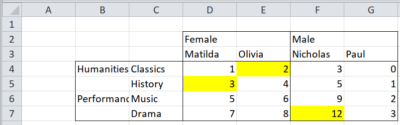
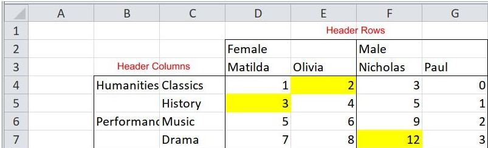
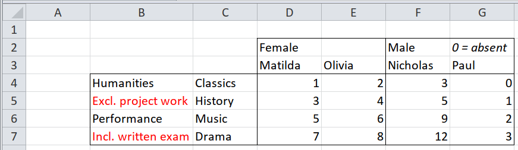
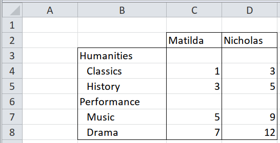

SpreadSheet Munging Strategies in Python - Pivot Tables - Simple Unpivoting
Contents
SpreadSheet Munging Strategies in Python - Pivot Tables - Simple Unpivoting#
Pivot Tables - Simple Unpivoting#
updated : April 14, 2022
This is part of a series of blog posts about extracting data from spreadsheets using Python. It is based on the book written by Duncan Garmonsway, which was written primarily for R users. LInks to the other posts are on the homepage.
Pivot tables offer a summarized version of the data, and are usually succinct and visually appealing. However, for analysis, it is not so good. How do we convert pivot tables to tidy data? This section covers that. We’ll see various kinds of pivot tables, and work through each of them.
# pip install git+https://github.com/pyjanitor-devs/pyjanitor.git
import pandas as pd
import janitor
import numpy as np
excel_file = pd.ExcelFile("Data_files/worked-examples.xlsx", engine='openpyxl')
Case 1: Multiple Row and Column headers#


Observations:
There are two header rows - gender and names.
There are also two header columns on the left - Fields(Humanities, Performance) and Subjects(Classics, History, …)
For this case we wont be concerned with the colour formats. We’ll look at that in a later section.
df = (excel_file
.parse('pivot-annotations', header = [1,2], index_col=[0,1,2])
.droplevel(axis = 0, level = 0)
)
df
| Female | Male | ||||
|---|---|---|---|---|---|
| Matilda | Olivia | Nicholas | Paul | ||
| Humanities | Classics | 1 | 2 | 3 | 0 |
| History | 3 | 4 | 5 | 1 | |
| Performance | Music | 5 | 6 | 9 | 2 |
| Drama | 7 | 8 | 12 | 3 | |
df.index.names = ['field', 'subject']
df.columns.names = ['gender', 'student']
(df
.stack(['gender', 'student'])
.rename('scores')
.reset_index()
.ffill()
)
| field | subject | gender | student | scores | |
|---|---|---|---|---|---|
| 0 | Humanities | Classics | Female | Matilda | 1.0 |
| 1 | Humanities | Classics | Female | Olivia | 2.0 |
| 2 | Humanities | Classics | Male | Nicholas | 3.0 |
| 3 | Humanities | Classics | Male | Paul | 0.0 |
| 4 | Humanities | History | Female | Matilda | 3.0 |
| 5 | Humanities | History | Female | Olivia | 4.0 |
| 6 | Humanities | History | Male | Nicholas | 5.0 |
| 7 | Humanities | History | Male | Paul | 1.0 |
| 8 | Performance | Music | Female | Matilda | 5.0 |
| 9 | Performance | Music | Female | Olivia | 6.0 |
| 10 | Performance | Music | Male | Nicholas | 9.0 |
| 11 | Performance | Music | Male | Paul | 2.0 |
| 12 | Performance | Drama | Female | Matilda | 7.0 |
| 13 | Performance | Drama | Female | Olivia | 8.0 |
| 14 | Performance | Drama | Male | Nicholas | 12.0 |
| 15 | Performance | Drama | Male | Paul | 3.0 |
Case 2 : Multiple rows or columns of headers, with meaningful formatting#
Same as above, except we have to capture the format details. To get the colour information, we’ll make use of the xlsx_cells function from pyjanitor - under the hood, it uses openpyxl:
from janitor import xlsx_cells
df = xlsx_cells(excel_file, sheetnames='pivot-annotations', include_blank_cells=False, fill=True)
# the colours are stored in a dictionary form in a cell
# using Pandas' string functions make it easy to traverse
# and pick the exact metadata we are interested in.
df['fill_colour'] = df.fill.str.get('fgColor').str.get('rgb')
df
| value | internal_value | coordinate | row | column | data_type | is_date | number_format | fill | fill_colour | |
|---|---|---|---|---|---|---|---|---|---|---|
| 0 | Female | Female | D2 | 2 | 4 | s | False | General | {'patternType': None, 'fgColor': {'rgb': '0000... | 00000000 |
| 1 | Male | Male | F2 | 2 | 6 | s | False | General | {'patternType': None, 'fgColor': {'rgb': '0000... | 00000000 |
| 2 | Matilda | Matilda | D3 | 3 | 4 | s | False | General | {'patternType': None, 'fgColor': {'rgb': '0000... | 00000000 |
| 3 | Olivia | Olivia | E3 | 3 | 5 | s | False | General | {'patternType': None, 'fgColor': {'rgb': '0000... | 00000000 |
| 4 | Nicholas | Nicholas | F3 | 3 | 6 | s | False | General | {'patternType': None, 'fgColor': {'rgb': '0000... | 00000000 |
| 5 | Paul | Paul | G3 | 3 | 7 | s | False | General | {'patternType': None, 'fgColor': {'rgb': '0000... | 00000000 |
| 6 | Humanities | Humanities | B4 | 4 | 2 | s | False | General | {'patternType': None, 'fgColor': {'rgb': '0000... | 00000000 |
| 7 | Classics | Classics | C4 | 4 | 3 | s | False | General | {'patternType': None, 'fgColor': {'rgb': '0000... | 00000000 |
| 8 | 1 | 1 | D4 | 4 | 4 | n | False | General | {'patternType': None, 'fgColor': {'rgb': '0000... | 00000000 |
| 9 | 2 | 2 | E4 | 4 | 5 | n | False | General | {'patternType': 'solid', 'fgColor': {'rgb': 'F... | FFFFFF00 |
| 10 | 3 | 3 | F4 | 4 | 6 | n | False | General | {'patternType': None, 'fgColor': {'rgb': '0000... | 00000000 |
| 11 | 0 | 0 | G4 | 4 | 7 | n | False | General | {'patternType': None, 'fgColor': {'rgb': '0000... | 00000000 |
| 12 | History | History | C5 | 5 | 3 | s | False | General | {'patternType': None, 'fgColor': {'rgb': '0000... | 00000000 |
| 13 | 3 | 3 | D5 | 5 | 4 | n | False | General | {'patternType': 'solid', 'fgColor': {'rgb': 'F... | FFFFFF00 |
| 14 | 4 | 4 | E5 | 5 | 5 | n | False | General | {'patternType': None, 'fgColor': {'rgb': '0000... | 00000000 |
| 15 | 5 | 5 | F5 | 5 | 6 | n | False | General | {'patternType': None, 'fgColor': {'rgb': '0000... | 00000000 |
| 16 | 1 | 1 | G5 | 5 | 7 | n | False | General | {'patternType': None, 'fgColor': {'rgb': '0000... | 00000000 |
| 17 | Performance | Performance | B6 | 6 | 2 | s | False | General | {'patternType': None, 'fgColor': {'rgb': '0000... | 00000000 |
| 18 | Music | Music | C6 | 6 | 3 | s | False | General | {'patternType': None, 'fgColor': {'rgb': '0000... | 00000000 |
| 19 | 5 | 5 | D6 | 6 | 4 | n | False | General | {'patternType': None, 'fgColor': {'rgb': '0000... | 00000000 |
| 20 | 6 | 6 | E6 | 6 | 5 | n | False | General | {'patternType': None, 'fgColor': {'rgb': '0000... | 00000000 |
| 21 | 9 | 9 | F6 | 6 | 6 | n | False | General | {'patternType': None, 'fgColor': {'rgb': '0000... | 00000000 |
| 22 | 2 | 2 | G6 | 6 | 7 | n | False | General | {'patternType': None, 'fgColor': {'rgb': '0000... | 00000000 |
| 23 | Drama | Drama | C7 | 7 | 3 | s | False | General | {'patternType': None, 'fgColor': {'rgb': '0000... | 00000000 |
| 24 | 7 | 7 | D7 | 7 | 4 | n | False | General | {'patternType': None, 'fgColor': {'rgb': '0000... | 00000000 |
| 25 | 8 | 8 | E7 | 7 | 5 | n | False | General | {'patternType': None, 'fgColor': {'rgb': '0000... | 00000000 |
| 26 | 12 | 12 | F7 | 7 | 6 | n | False | General | {'patternType': 'solid', 'fgColor': {'rgb': 'F... | FFFFFF00 |
| 27 | 3 | 3 | G7 | 7 | 7 | n | False | General | {'patternType': None, 'fgColor': {'rgb': '0000... | 00000000 |
From the excel file we can tell that the fields and subjects columns are columns 2 and 3 respectively, the gender row is 2, while the students are on row 3:
index = df.loc[df.column.isin([2,3]), ['value', 'row', 'column']]
index = (index
.assign(fields = np.where(index.column.eq(2), index.value, np.nan),
subjects = lambda df: np.where(df.fields.isna(), df.value, np.nan))
# pyjanitor ... syntactic sugar for pd.Series.ffill
.fill_direction(fields='down')
.dropna()
.drop(columns='value')
)
index
/home/sam/miniforge3/envs/blogger/lib/python3.9/site-packages/pandas_flavor/register.py:153: FutureWarning: This function will be deprecated in a 1.x release. Please use `pd.DataFrame.assign` instead.
return method(self._obj, *args, **kwargs)
| row | column | fields | subjects | |
|---|---|---|---|---|
| 7 | 4 | 3 | Humanities | Classics |
| 12 | 5 | 3 | Humanities | History |
| 18 | 6 | 3 | Performance | Music |
| 23 | 7 | 3 | Performance | Drama |
columns = df.loc[df.row.isin([2,3]), ['value', 'row', 'column']]
columns = (columns
.sort_values(['column'])
.assign(gender = lambda df: np.where(df.row.eq(2), df.value, np.nan),
students = lambda df: np.where(df.gender.isna(), df.value, np.nan))
.fill_direction(gender='down')
.dropna()
.drop(columns='value')
)
columns
/home/sam/miniforge3/envs/blogger/lib/python3.9/site-packages/pandas_flavor/register.py:153: FutureWarning: This function will be deprecated in a 1.x release. Please use `pd.DataFrame.assign` instead.
return method(self._obj, *args, **kwargs)
| row | column | gender | students | |
|---|---|---|---|---|
| 2 | 3 | 4 | Female | Matilda |
| 3 | 3 | 5 | Female | Olivia |
| 4 | 3 | 6 | Male | Nicholas |
| 5 | 3 | 7 | Male | Paul |
scores = (df
.loc[df.data_type == 'n', ['value', 'row', 'column', 'fill_colour']]
.rename(columns={'value':'scores'})
)
scores
| scores | row | column | fill_colour | |
|---|---|---|---|---|
| 8 | 1 | 4 | 4 | 00000000 |
| 9 | 2 | 4 | 5 | FFFFFF00 |
| 10 | 3 | 4 | 6 | 00000000 |
| 11 | 0 | 4 | 7 | 00000000 |
| 13 | 3 | 5 | 4 | FFFFFF00 |
| 14 | 4 | 5 | 5 | 00000000 |
| 15 | 5 | 5 | 6 | 00000000 |
| 16 | 1 | 5 | 7 | 00000000 |
| 19 | 5 | 6 | 4 | 00000000 |
| 20 | 6 | 6 | 5 | 00000000 |
| 21 | 9 | 6 | 6 | 00000000 |
| 22 | 2 | 6 | 7 | 00000000 |
| 24 | 7 | 7 | 4 | 00000000 |
| 25 | 8 | 7 | 5 | 00000000 |
| 26 | 12 | 7 | 6 | FFFFFF00 |
| 27 | 3 | 7 | 7 | 00000000 |
All that’s left is to align them on their row and column positions:
(index
.drop(columns='column')
.merge(scores, on = 'row')
.merge(columns.drop(columns='row'), on = 'column')
.loc[:, ['students', 'gender', 'fields', 'subjects', 'scores', 'fill_colour']]
)
| students | gender | fields | subjects | scores | fill_colour | |
|---|---|---|---|---|---|---|
| 0 | Matilda | Female | Humanities | Classics | 1 | 00000000 |
| 1 | Matilda | Female | Humanities | History | 3 | FFFFFF00 |
| 2 | Matilda | Female | Performance | Music | 5 | 00000000 |
| 3 | Matilda | Female | Performance | Drama | 7 | 00000000 |
| 4 | Olivia | Female | Humanities | Classics | 2 | FFFFFF00 |
| 5 | Olivia | Female | Humanities | History | 4 | 00000000 |
| 6 | Olivia | Female | Performance | Music | 6 | 00000000 |
| 7 | Olivia | Female | Performance | Drama | 8 | 00000000 |
| 8 | Nicholas | Male | Humanities | Classics | 3 | 00000000 |
| 9 | Nicholas | Male | Humanities | History | 5 | 00000000 |
| 10 | Nicholas | Male | Performance | Music | 9 | 00000000 |
| 11 | Nicholas | Male | Performance | Drama | 12 | FFFFFF00 |
| 12 | Paul | Male | Humanities | Classics | 0 | 00000000 |
| 13 | Paul | Male | Humanities | History | 1 | 00000000 |
| 14 | Paul | Male | Performance | Music | 2 | 00000000 |
| 15 | Paul | Male | Performance | Drama | 3 | 00000000 |
Case 3 : Mixed headers and notes in the same row/column, distinguished by formatting#

In this case, the highlighted texts should be excluded, as they are just notes and not relevant. Same goes for the 0=absent in G2 cell, which is italicized. red is identifed as FFFF0000, while italics should return True if it exists.
We’ll use the same steps as in the last solution:
df = xlsx_cells(excel_file, sheetnames='pivot-notes', include_blank_cells=False, font=True)
You can view a single row in the font column:
df.font[0]
{'name': 'Calibri',
'family': 2.0,
'sz': 11.0,
'b': False,
'i': False,
'u': None,
'strike': None,
'color': {'rgb': 'FF000000', 'type': 'rgb', 'tint': 0.0},
'vertAlign': None,
'charset': 1,
'outline': None,
'shadow': None,
'condense': None,
'extend': None,
'scheme': None}
df = df.assign(font_colour = df.font.str.get('color').str.get('rgb'),
italics = df.font.str.get('i'))
df
| value | internal_value | coordinate | row | column | data_type | is_date | number_format | font | font_colour | italics | |
|---|---|---|---|---|---|---|---|---|---|---|---|
| 0 | Female | Female | D2 | 2 | 4 | s | False | General | {'name': 'Calibri', 'family': 2.0, 'sz': 11.0,... | FF000000 | False |
| 1 | Male | Male | F2 | 2 | 6 | s | False | General | {'name': 'Calibri', 'family': 2.0, 'sz': 11.0,... | FF000000 | False |
| 2 | 0 = absent | 0 = absent | G2 | 2 | 7 | s | False | General | {'name': 'Calibri', 'family': 2.0, 'sz': 11.0,... | FF000000 | True |
| 3 | Matilda | Matilda | D3 | 3 | 4 | s | False | General | {'name': 'Calibri', 'family': 2.0, 'sz': 11.0,... | FF000000 | False |
| 4 | Olivia | Olivia | E3 | 3 | 5 | s | False | General | {'name': 'Calibri', 'family': 2.0, 'sz': 11.0,... | FF000000 | False |
| 5 | Nicholas | Nicholas | F3 | 3 | 6 | s | False | General | {'name': 'Calibri', 'family': 2.0, 'sz': 11.0,... | FF000000 | False |
| 6 | Paul | Paul | G3 | 3 | 7 | s | False | General | {'name': 'Calibri', 'family': 2.0, 'sz': 11.0,... | FF000000 | False |
| 7 | Humanities | Humanities | B4 | 4 | 2 | s | False | General | {'name': 'Calibri', 'family': 2.0, 'sz': 11.0,... | FF000000 | False |
| 8 | Classics | Classics | C4 | 4 | 3 | s | False | General | {'name': 'Calibri', 'family': 2.0, 'sz': 11.0,... | FF000000 | False |
| 9 | 1 | 1 | D4 | 4 | 4 | n | False | General | {'name': 'Calibri', 'family': 2.0, 'sz': 11.0,... | FF000000 | False |
| 10 | 2 | 2 | E4 | 4 | 5 | n | False | General | {'name': 'Calibri', 'family': 2.0, 'sz': 11.0,... | FF000000 | False |
| 11 | 3 | 3 | F4 | 4 | 6 | n | False | General | {'name': 'Calibri', 'family': 2.0, 'sz': 11.0,... | FF000000 | False |
| 12 | 0 | 0 | G4 | 4 | 7 | n | False | General | {'name': 'Calibri', 'family': 2.0, 'sz': 11.0,... | FF000000 | False |
| 13 | Excl. project work | Excl. project work | B5 | 5 | 2 | s | False | General | {'name': 'Calibri', 'family': 2.0, 'sz': 11.0,... | FFFF0000 | False |
| 14 | History | History | C5 | 5 | 3 | s | False | General | {'name': 'Calibri', 'family': 2.0, 'sz': 11.0,... | FF000000 | False |
| 15 | 3 | 3 | D5 | 5 | 4 | n | False | General | {'name': 'Calibri', 'family': 2.0, 'sz': 11.0,... | FF000000 | False |
| 16 | 4 | 4 | E5 | 5 | 5 | n | False | General | {'name': 'Calibri', 'family': 2.0, 'sz': 11.0,... | FF000000 | False |
| 17 | 5 | 5 | F5 | 5 | 6 | n | False | General | {'name': 'Calibri', 'family': 2.0, 'sz': 11.0,... | FF000000 | False |
| 18 | 1 | 1 | G5 | 5 | 7 | n | False | General | {'name': 'Calibri', 'family': 2.0, 'sz': 11.0,... | FF000000 | False |
| 19 | Performance | Performance | B6 | 6 | 2 | s | False | General | {'name': 'Calibri', 'family': 2.0, 'sz': 11.0,... | FF000000 | False |
| 20 | Music | Music | C6 | 6 | 3 | s | False | General | {'name': 'Calibri', 'family': 2.0, 'sz': 11.0,... | FF000000 | False |
| 21 | 5 | 5 | D6 | 6 | 4 | n | False | General | {'name': 'Calibri', 'family': 2.0, 'sz': 11.0,... | FF000000 | False |
| 22 | 6 | 6 | E6 | 6 | 5 | n | False | General | {'name': 'Calibri', 'family': 2.0, 'sz': 11.0,... | FF000000 | False |
| 23 | 9 | 9 | F6 | 6 | 6 | n | False | General | {'name': 'Calibri', 'family': 2.0, 'sz': 11.0,... | FF000000 | False |
| 24 | 2 | 2 | G6 | 6 | 7 | n | False | General | {'name': 'Calibri', 'family': 2.0, 'sz': 11.0,... | FF000000 | False |
| 25 | Incl. written exam | Incl. written exam | B7 | 7 | 2 | s | False | General | {'name': 'Calibri', 'family': 2.0, 'sz': 11.0,... | FFFF0000 | False |
| 26 | Drama | Drama | C7 | 7 | 3 | s | False | General | {'name': 'Calibri', 'family': 2.0, 'sz': 11.0,... | FF000000 | False |
| 27 | 7 | 7 | D7 | 7 | 4 | n | False | General | {'name': 'Calibri', 'family': 2.0, 'sz': 11.0,... | FF000000 | False |
| 28 | 8 | 8 | E7 | 7 | 5 | n | False | General | {'name': 'Calibri', 'family': 2.0, 'sz': 11.0,... | FF000000 | False |
| 29 | 12 | 12 | F7 | 7 | 6 | n | False | General | {'name': 'Calibri', 'family': 2.0, 'sz': 11.0,... | FF000000 | False |
| 30 | 3 | 3 | G7 | 7 | 7 | n | False | General | {'name': 'Calibri', 'family': 2.0, 'sz': 11.0,... | FF000000 | False |
index = df.loc[df.column.isin([2,3]), ['value', 'row', 'column', 'font_colour']]
index = (index
.loc[lambda df: df.font_colour.ne('FFFF0000')]
.assign(fields = lambda df: np.where(df.column.eq(2), df.value, np.nan),
subjects = lambda df: np.where(df.fields.isna(), df.value, np.nan))
.fill_direction(fields='down')
.dropna()
.drop(columns=['value', 'font_colour'])
)
index
/home/sam/miniforge3/envs/blogger/lib/python3.9/site-packages/pandas_flavor/register.py:153: FutureWarning: This function will be deprecated in a 1.x release. Please use `pd.DataFrame.assign` instead.
return method(self._obj, *args, **kwargs)
| row | column | fields | subjects | |
|---|---|---|---|---|
| 8 | 4 | 3 | Humanities | Classics |
| 14 | 5 | 3 | Humanities | History |
| 20 | 6 | 3 | Performance | Music |
| 26 | 7 | 3 | Performance | Drama |
columns = df.loc[df.row.isin([2,3]), ['value', 'row', 'column', 'italics']]
columns = (columns
.sort_values(['column'])
.loc[lambda df: ~df.italics]
.assign(gender = lambda df: np.where(df.row.eq(2), df.value, np.nan),
students = lambda df: np.where(df.gender.isna(), df.value, np.nan))
.fill_direction(gender = 'down')
.dropna()
.drop(columns=['value', 'italics'])
)
columns
/home/sam/miniforge3/envs/blogger/lib/python3.9/site-packages/pandas_flavor/register.py:153: FutureWarning: This function will be deprecated in a 1.x release. Please use `pd.DataFrame.assign` instead.
return method(self._obj, *args, **kwargs)
| row | column | gender | students | |
|---|---|---|---|---|
| 3 | 3 | 4 | Female | Matilda |
| 4 | 3 | 5 | Female | Olivia |
| 5 | 3 | 6 | Male | Nicholas |
| 6 | 3 | 7 | Male | Paul |
scores = (df
.loc[df.data_type == 'n', ['value', 'row', 'column']]
.rename(columns={'value':'scores'})
)
scores
| scores | row | column | |
|---|---|---|---|
| 9 | 1 | 4 | 4 |
| 10 | 2 | 4 | 5 |
| 11 | 3 | 4 | 6 |
| 12 | 0 | 4 | 7 |
| 15 | 3 | 5 | 4 |
| 16 | 4 | 5 | 5 |
| 17 | 5 | 5 | 6 |
| 18 | 1 | 5 | 7 |
| 21 | 5 | 6 | 4 |
| 22 | 6 | 6 | 5 |
| 23 | 9 | 6 | 6 |
| 24 | 2 | 6 | 7 |
| 27 | 7 | 7 | 4 |
| 28 | 8 | 7 | 5 |
| 29 | 12 | 7 | 6 |
| 30 | 3 | 7 | 7 |
(index
.drop(columns='column')
.merge(scores, on = 'row')
.merge(columns.drop(columns='row'), on = 'column')
.loc[:, ['students', 'gender', 'fields', 'subjects', 'scores']]
)
| students | gender | fields | subjects | scores | |
|---|---|---|---|---|---|
| 0 | Matilda | Female | Humanities | Classics | 1 |
| 1 | Matilda | Female | Humanities | History | 3 |
| 2 | Matilda | Female | Performance | Music | 5 |
| 3 | Matilda | Female | Performance | Drama | 7 |
| 4 | Olivia | Female | Humanities | Classics | 2 |
| 5 | Olivia | Female | Humanities | History | 4 |
| 6 | Olivia | Female | Performance | Music | 6 |
| 7 | Olivia | Female | Performance | Drama | 8 |
| 8 | Nicholas | Male | Humanities | Classics | 3 |
| 9 | Nicholas | Male | Humanities | History | 5 |
| 10 | Nicholas | Male | Performance | Music | 9 |
| 11 | Nicholas | Male | Performance | Drama | 12 |
| 12 | Paul | Male | Humanities | Classics | 0 |
| 13 | Paul | Male | Humanities | History | 1 |
| 14 | Paul | Male | Performance | Music | 2 |
| 15 | Paul | Male | Performance | Drama | 3 |
Case 4: Mixed levels of headers in the same row/column, distinguished by formatting#

The formatting here refers to the indent - notice how Humanities and Performance are closer to the border compared to the subjects. Same goes for Matilda and Nicholas. Getting the indent information would require the use of Openpyxl. This data can however be handled easily by Pandas - for the header columns, we can use the adjacent null cells as identifiers:
(excel_file
.parse(sheet_name='pivot-hierarchy', header=[0,1])
.droplevel(axis = 1, level = 0)
.remove_empty()
.assign(fields = lambda df: np.where(df.iloc[:, -1].isna(), df.iloc[:, 0], np.nan),
subjects = lambda df: np.where(df.fields.isna(), df.iloc[:, 0], np.nan)
)
.fill_direction(fields = 'down')
.dropna()
.iloc[:, 1:]
.melt(id_vars = ['fields', 'subjects'], var_name = 'students', value_name = 'scores')
)
/home/sam/miniforge3/envs/blogger/lib/python3.9/site-packages/pandas_flavor/register.py:153: FutureWarning: This function will be deprecated in a 1.x release. Please use `pd.DataFrame.assign` instead.
return method(self._obj, *args, **kwargs)
| fields | subjects | students | scores | |
|---|---|---|---|---|
| 0 | Humanities | Classics | Matilda | 1.0 |
| 1 | Humanities | History | Matilda | 3.0 |
| 2 | Performance | Music | Matilda | 5.0 |
| 3 | Performance | Drama | Matilda | 7.0 |
| 4 | Humanities | Classics | Nicholas | 3.0 |
| 5 | Humanities | History | Nicholas | 5.0 |
| 6 | Performance | Music | Nicholas | 9.0 |
| 7 | Performance | Drama | Nicholas | 12.0 |